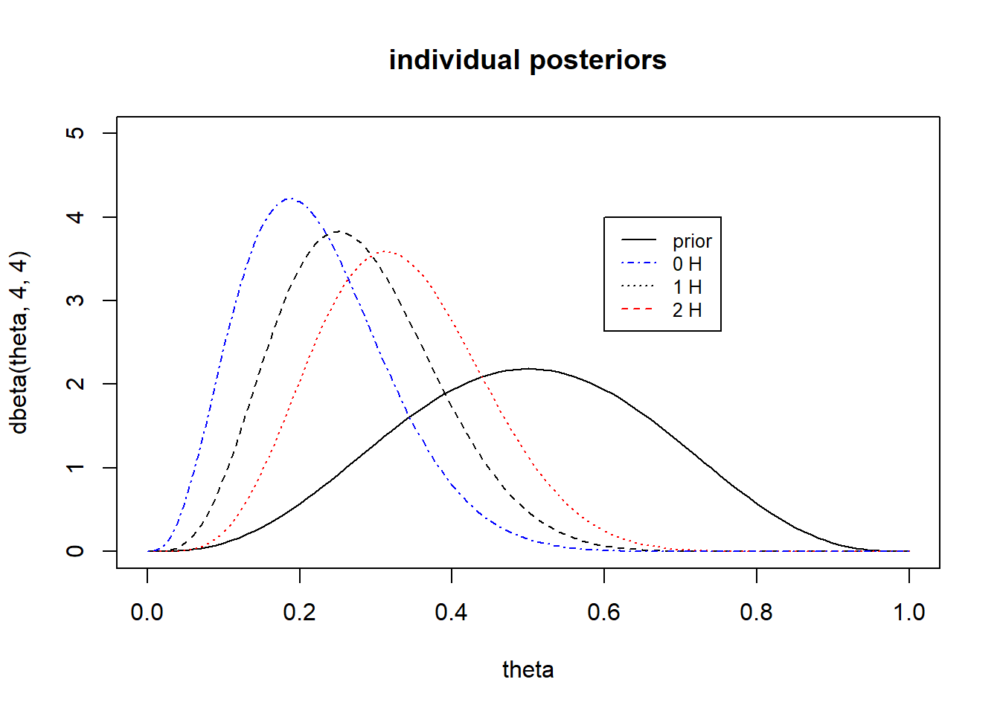
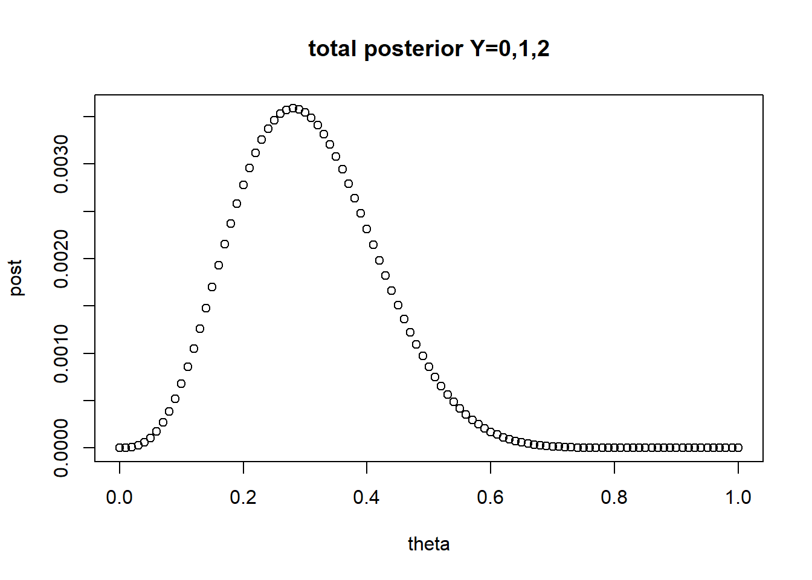
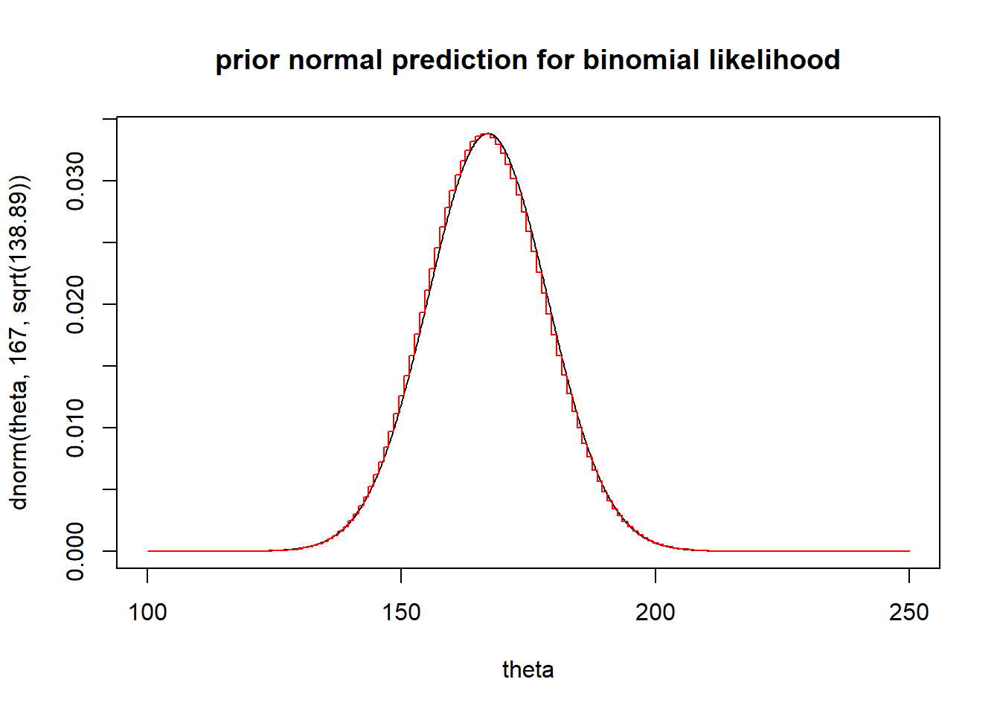
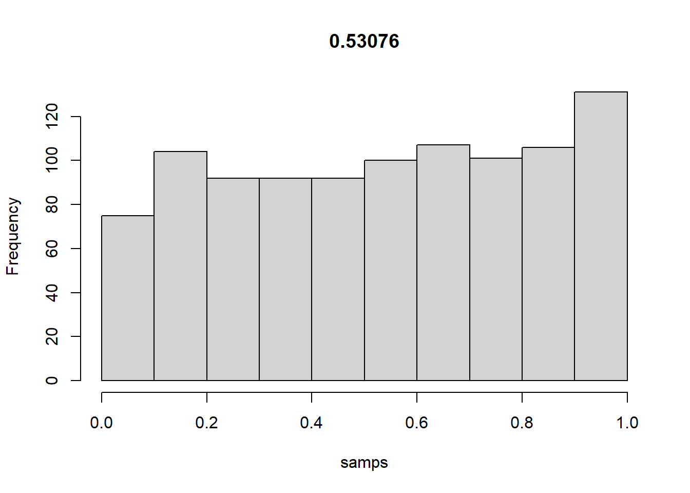
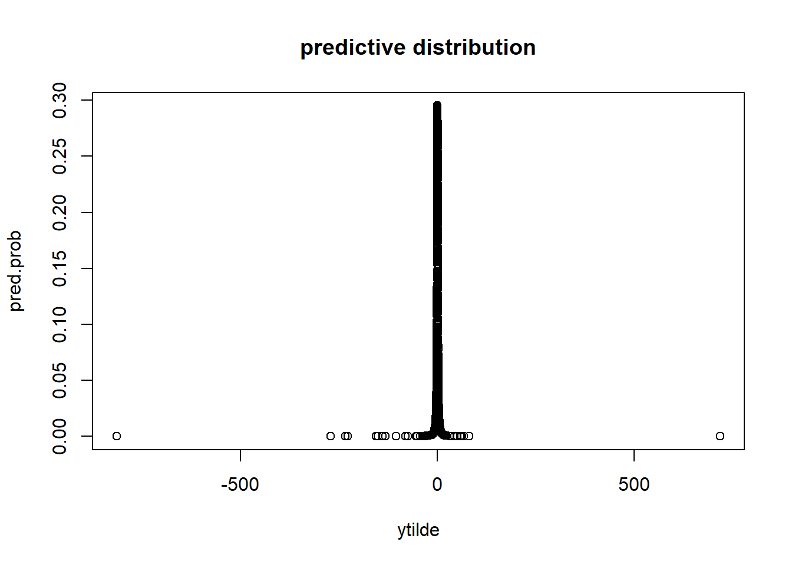
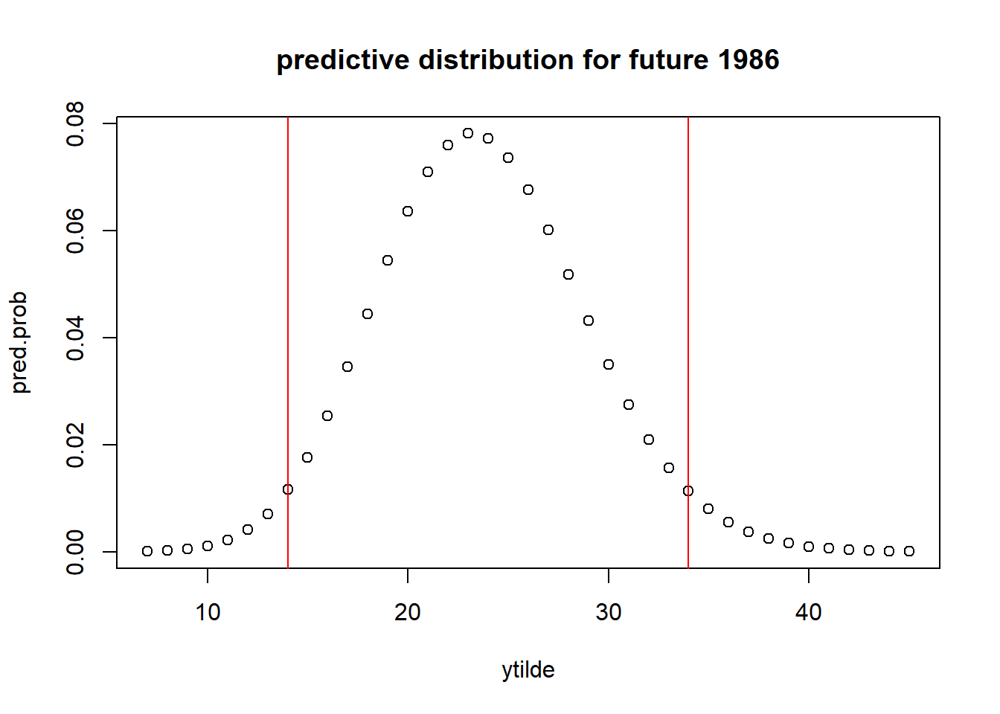
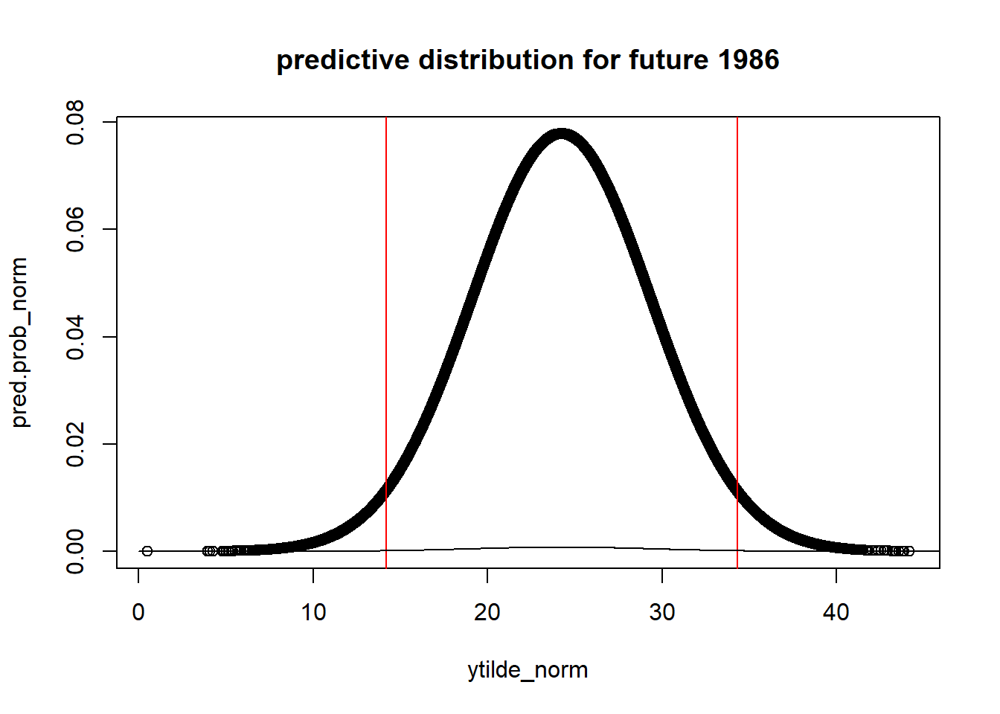
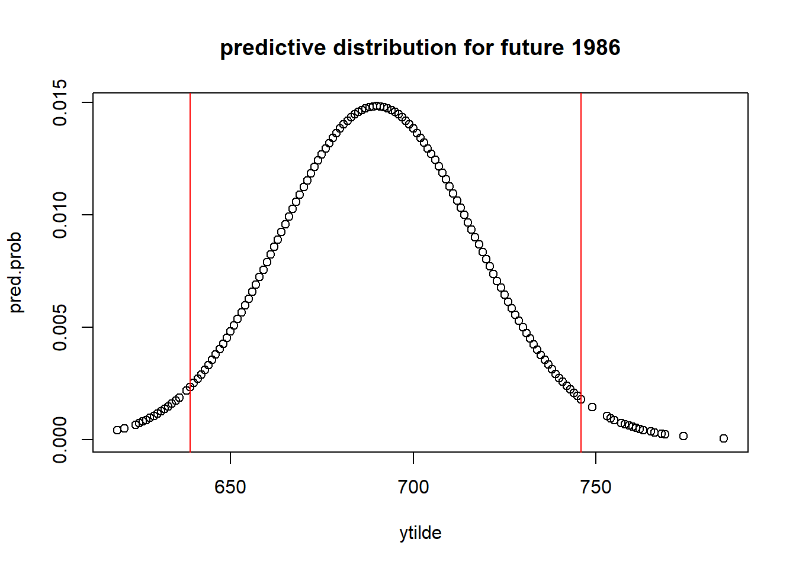

Chapter 2 Single parameter models
2.1 Estimating a probability from binomial data
\[\begin{equation} p(y | \theta) = {n \choose y}\theta^y(1-\theta)^{n-y} \tag{2.1} \end{equation}\]
To perform Bayesian inference we assume \(\theta \sim U(0,1)\) where the posterior is
\[\begin{equation} p(\theta | y) \propto \theta^y(1-\theta)^{n-y} \tag{2.2} \end{equation}\]
which is the form of a beta distribution \(\theta | y \sim Beta(y+1, n-y+1)\)
2.2 Posterior as a compromise between data and prior information
The posterior is less variable than the prior because it incorporates the information from the data.
\[\begin{equation} E(\theta) = E(E(\theta | y)) \tag{2.3} \end{equation}\]
\[\begin{equation} V(\theta) = E(V(\theta|y)) + V(E(\theta | y)) \tag{2.4} \end{equation}\]
where \(\theta|y\) is the posterior. So the average of the prior, is the average of the posterior means over the distribution of possible data. The variance of the prior (2.4) says the posterior variance is on average smaller than the prior variance.
2.3 Summarizing the posterior inference
The mean, median, mode, and standard deviation of the posterior distribution summarize the all the current information about a model.
Posterior quantiles and intervals
The posterior uncertainty can be reported by presenting the quantiles of the posterior distribution. The interval, a central interval of posterior probability corresponds to the case of 100(\(1-\alpha)\%\), to the range of values above and below which lies exactly 100(\(\alpha/2)\%\) of the posterior probability. The interval estimates are posterior intervals. This differences from the confidence interval because the confidence interval is not a probability interval, because either the parameter is within the region or it is not, but the confidence interval provides information in the long run over repeated experimentation as to how many experiments would contain the true parameter.
There is also the highest posterior interval which is a probabilistic interval that is not less than any region outside of the interval.
2.4 Informative prior distributions
the property that the posterior distribution follows the same parametric form as the prior distribution is called conjugacy. Where the beta prior distribution is a conjugate family for the binomial likelihood.
so given the binomial likelihood \(p(y|\theta)\propto \theta^a(1-\theta)^b\), and a prior density \(p(\theta)\propto \theta^{\alpha-1}(1-\theta)^{\beta-1}\) the posterior is of the beta family.
\[ \begin{aligned} p(\theta | y) &\propto \theta^y(1-\theta)^{n-y}\theta^{\alpha-1}(1-\theta)^{\beta-1}\\ &= \theta^{y+\alpha-1}(1-\theta)^{n-y+\beta-1}\\ &= Beta(\theta | \alpha+y, \beta+n-y) \end{aligned} \]
Conjugate prior distributions
Conjugacy is formally defined as if F is a class of sampling distributions \(p(y|\theta)\), and P is a class of prior distributions for \(\theta\), then the class P is conjugate for F if \(p(\theta | y) \in P\) for all \(p(.|\theta)\in F\) and \(p(.)\in P\).
Conjugate prior, distributions, exponential families, and sufficient statistics
Posterior distributions can be derived using sufficient statistics from exponential families. The exponential family is defined as
\[ \begin{aligned} p(y_i | \theta)=f(y_i)g(\theta)e^{\phi(\theta)^Tu(y_i)} \end{aligned} \] Where \(\phi(\theta), u(y_i)\) are vectors of equal dimension to that of \(\theta\). The \(\phi(\theta)\) is called the natural parameter for the family (F). The likelihood of a sequence \(y=(y_1,...,y_n)\) iid is
\[ \begin{aligned} p(y | \theta)&= (\prod_{i=1}^n f(y_i)) g(\theta)^n exp(\phi(\theta)^T \sum_{i=1}^n u(y_i)) \\ &\propto g(\theta)^ne^{\phi(\theta)^Tt(y)}, t(y)=\sum_{y=1}^n u(y_i) \end{aligned} \]
The sufficient statistic for \(\theta\) is \(t(y)\) because the likelihood for $depends on the data, y, only through the value of t(y).
Sufficient statistics benefit posterior distributions because if the prior density is specified as \[ \begin{aligned} p(\theta)&\propto g(\theta)^{\eta} e^{\phi(\theta)^T \nu} \\ \end{aligned} \] Then the posterior density using sufficient statistics is
\[ \begin{aligned} p(\theta | y ) &\propto g(\theta)^{\eta+n} e^{\phi(\theta)^T (\nu+t(y))} \\ \end{aligned} \]
Exponential families are the only classes of distributions that have natural conjugate prior distributions.
2.5 Normal distribution with known variance
The normal distribution is foundational to statistical modeling, with the central limit theorem (CLT) allowing for the use of normal likelihood in many statistical problems which can approximate complex likelihoods. If the normal distribution does not provide a good model fit, finite mixtures of distributions can identify useful solutions.
Likelihood of one data point
With mean \(\theta\) and known variance \(\sigma^2\) the sampling distribution of a given point is defined
\(p(y|\theta) = \frac{1}{\sqrt{2*\pi*\sigma^2}}e^{-\frac{1}{2\sigma^2} (y-\theta)^2}\)
2.5.1 Conjugate prior and posterior distributions
The prior has the exponential family form given as \(\theta \sim N(\mu_0, \tau_0^2)\)
\[ \begin{aligned} p(\theta ) &\propto exp( \frac{1}{2\tau_0^2}(\theta-\mu_0)^2) \\ \end{aligned} \]
WHere completing the square can find the posterior distribution
\[ \begin{aligned} p(\theta | y ) &\propto exp(-1/2(\frac{(y-\theta)^2}{\sigma^2} +\frac{(\theta-\mu_0)^2}{\tau_0^2} ) ) \\ p(\theta | y ) &\propto exp( \frac{1}{2\tau_1^2}(\theta-\mu_1)^2), \theta|y \sim N(\mu_1,\tau_1^2) \end{aligned} \] where \(\mu_1 = \frac{1/\tau_0^2 \mu_0 + 1/\sigma^2 y}{1/\tau_0^2 + 1/\sigma^2}\) and \(1/\tau_1^2 = 1/\tau_0^2 +1/\sigma^2\)
In manipulating the distributions the inverse of the variance is defined as the precision. The posterior precision is equal to the prior precision plus the data precision. And the posterior mean is a weighted average of the prior mean and the observed value, y, proportional to the total precision.
Posterior predictive distribution
the posterior predictive distribution of a future observation, x, p(x|y) can be calculated
\[ \begin{aligned} p(x|y) &= \int p(x|\theta)p(\theta|y) d\theta &\propto \int exp(-1/2\sigma^2 (x-\theta)^2) exp(-1/2\tau_1^2 (\theta-\mu_1)^2) d\theta \end{aligned} \] the future observations, x, does not depend on the past observations y given \(\theta\).
Normal model with multiple observations
For multiple observations, y, the posterior density is formulated as:
\[ \begin{aligned} p(\theta | y ) &\propto p(\theta)p(y|\theta) \\ &=p(\theta)\prod_i p(y_i | \theta)\\ &\propto exp(-1/2\tau_0^2 (\theta-\mu_0)^2)\prod_i exp(-1/2\sigma^2 (y_i -\theta)^2)\\ &\propto exp(-1/2 (1/\tau_0^2(\theta-\mu_0)^2+ 1/\sigma^2\sum_i(y_i-\theta)^2) )\\ \end{aligned} \] Simplfying the algebra shows the posterior depends on y only through the sample mean (sufficient statistic), \(\bar{y}\) is the sufficient statistic for \(\theta\), and the final model is \(\bar{y} | \theta,\sigma^2 \sim N(\theta, \sigma^2/n)\)
2.6 Other standard single-parameter models
The binomial model is motivated by counting exchangeable outcomes. The normal distribution applies to a random variable that is the sum of many exchangeable- or independent terms. The poisson and exponential distribution applies to number of counts, rates, or waiting times for events modeled as occurring exchangeably in all time intervals, i.e. independently in time, and with a constant rate of occurrence.
Normal distribution with known mean but unknown variance
For \(p(y|\theta,\sigma^2)=N(y|\theta,\sigma^2)\) with known mean and unknown variance the likelihood vector with iid observations follows
\[ \begin{aligned} p( y | \sigma^2 ) &\propto \sigma^{-n}exp(-1/2\sigma^2 \sum (y_i - \theta)^2) \\ &= (\sigma^2)^{-n/2}exp(-n/2\sigma^2 \nu) \end{aligned} \] The sufficient statistic \(\nu = -1/n \sum (y_i-\theta)^2\). The corresponding conjugate prior density is the inverse-gamma \[ \begin{aligned} p(\sigma^2)\propto (\sigma^2)^{-(\alpha+1)}e^{-\beta/\sigma^2} \end{aligned} \] THe convenient parameterization is as a scaled inverse-\(\chi^2\) distribution with scale \(\sigma_0^2\) and \(\nu_0\) degrees of freedom. The prior distribution for \(\sigma^2\) is taken as \(\sigma_0^2\nu_0/X\), where \(X\sim \chi_{\nu_0}^2\) random variable.
The resulting posterior density for \(\sigma^2\) is
\[ \begin{aligned} p(\sigma^2| y) &\propto p(\sigma^2)p(y|\sigma^2)\\ &\propto \frac{\sigma_0^2}{\sigma^2}^{\nu_0/2+1}exp(\frac{\nu_0\sigma_0^2}{2\sigma^2})((\sigma^2)^{-n/2} exp(-n/2\frac{\nu}{\sigma^2}))\\ &\propto (\sigma^2)^{-(n+\nu_0)/(2+1)}exp(\frac{-1}{2\sigma^2}(\nu_0\sigma_0^2+n\nu))\\ &\text{then } \sigma^2 | y \sim Inv.\chi^2 (\nu_0+n, \frac{\nu_0\sigma_0^2+ n\nu}{\nu_0+n})\\ \end{aligned} \] Which is a scaled inverse-\(\chi^2\) with scale equal to the degrees-of-freedom weighted average of the prior and data scales, and the d.f. equal to the sum of the prior and data degrees-of-freedom.
Poisson model
The Poisson model arises in data in the form of counts; in epidemiology studies disease incidence is modeled using Poisson framework.
the likelihood is \[ \begin{aligned} p(y|\theta)&= \prod_i^n \frac{1}{y_i!}\theta^{y_i}e^{-\theta}\\ &=\theta^{t(y)}e^{-n\theta}\\ \end{aligned} \] Where the sufficient statistic is t(y)=\(\sum y_i\) and the likelihood in exponential family form is written as
\[ p(y|\theta)\propto e^{-n\theta}e^{t(y)log(\theta)} \] where the natural parameter \(\phi(\theta)=log(\theta)\) and the natural conjugate prior distribution is
\[ p(\theta)\propto (e^{-\theta})^{\eta}e^{\nu *log(\theta)} \] indexed by hyperparameters (\(\eta,\nu\)). We can rewrite the likelihood in the form \(\theta^a e^{-b\theta}\) and so the conjugate prior must be in the form of \(p(\theta)\propto \theta^Ae^{-B\theta}\) which can be re-written to follow a Gamma density as \[ p(\theta)\propto e^{-\beta\theta}\theta^{\alpha-1} \] and this follows a Gamma(\(\alpha,\beta)\) equivalent to prior total count of \(\alpha-1\) in \(\beta\) prior observations. The posterior is \[ \theta|y \sim Gamma(\alpha+n\bar{y}, \beta+n) \]
2.7 Exercises
Question 1
prior Beta(4,4), where a coin is tossed 10 times and heads appears fewer than 3 times. the exact posterior is Beta(4+y, 4+10-y) for y=0,1,2. Since we don’t know the observed heads, but that \(y<3\) we plot the posterior distributions for each possibility. For 2 heads it is closer to the prior, with posterior mean of 0.33, which is closest to the prior mean of 1/2.
The random event is that \(Y=(0,1,2)\) and we sum all possibilities for the total likelihood.
The likelihood of the total event is \(\theta^0(1-\theta)^{10}+\binom{10}{1}\theta(1-\theta)^9+\binom{10}{2}\theta^2(1-\theta)^8\)
the posterior is \(\theta^3(1-\theta)^{13}+\binom{10}{1}\theta^4(1-\theta)^{12}+\binom{10}{2}\theta^5(1-\theta)^{11}\)
theta<-seq(from=0,to=1,by=0.01)
plot(theta,dbeta(theta,4,4),type='l',ylim=c(0,5),main='individual posteriors') ## prior
lines(theta,dbeta(theta,4+1,4+10-1),lty=2) ## 1 success
lines(theta,dbeta(theta,4+2,4+10-2),lty=3,col='red') ## 2 succe
lines(theta,dbeta(theta,4,4+10),lty=4,col='blue') ## 0 successes
legend(0.6, 4,
legend=c("prior", "0 H", "1 H", "2 H"),
col=c("black","blue","black", "red"), lty=c(1,4,3,2), cex=0.8)
post<- theta^3*(1-theta)^(13)+choose(10,1)*theta^4*(1-theta)^12+choose(10,2)*theta^5*(1-theta)^11
plot(theta,post,main='total posterior Y=0,1,2')
Normal approximation example
For female births we have beta(438,544) we use the normal approximation. This replicates Gelman’s Figure 2.3 (a, b)
theta<-seq(from=0.001,to=1,by=0.01)
## example births
postMean <-function(alpha,beta,y,n){
return( (alpha+y)/(alpha+beta+n))
}
postVar<-function(alpha,beta,y,n){
return( ((alpha+y)*(beta+n-y))/( (alpha+beta+n)^2*(alpha+beta+n+1)) )
}
sdnorm<-sqrt(postVar(438,544,0,0))
logitMean<-log( postMean(438,544,0,0)/(1-postMean(438,544,0,0)))
logitTheta<-log(theta/(1-theta))
par(mfrow=c(1,2))
plot(theta,dbeta(theta,438,544),type='l',xlim=c(0.35,0.55),main="posterior beta") ## prior
abline(v=0.446,col='red')
draws<-rbeta(1000,438,544)
plot(logitTheta,dnorm(logitTheta,mean =logitMean, sd=sd(log(draws/(1-draws))) ),type='l', xlim=c(-0.5,0.1),main="Normal approx.") ## prior
abline(v=-0.22,col='red')Question 3
The prior predictive distributions for the number of 6’s in a fair roll, tossed 1,000 times will follow a beta distribution. Let y be the number of 6’s in 1000 rolls of fair die, the probability for a 6 is 1/6, so the number of 6’s (successes) in this trial is approximateley 167, and 833 failures as the prior prediction. with probabiliy of success (1/6).
We plot the beta distribution of the expected number of heads in 1000 tosses.
The normal approximation for the prior prediction uses the binomial distribution is \(\mu = n*p = 167\) and $^2 = npq $= 138.89 \(\sim N(167, 138.89)\)
The normal approximation shows the probability of heads in a given 1000 tosses, using a non-informative prior beta(167,833) which has a prior predictive mean of \(exp(-1.79)/(1+exp(-1.79)) = 0.143\). This is not the same for number of success in 1000 tosses.
We find the probability distribution of a given success and the prior probability predictive interval follows a beta with 95% (0.12,0.17) for hte probability of rolling a 6
## based on normal approximation sketch the distribution of y
## for normal we use the logit transform
## n = 1,000
## first lets construct a beta distribution.
## let the prior be beta(4,4) or even beta(1,1)
## prior prediction
theta<-seq(from=100,to=250,by=0.11)
plot(theta,dnorm(theta,167,sqrt(138.89)),type='l',main="prior normal prediction for binomial likelihood") ## prior
lines(theta,dbinom(round(theta),size=1000,prob=(1/6)),main="prior binom prediction for binomial likelihood",col='red') ## prior
## posterior prediction (normal).
## assume p=1/6 we expect 167 successes under likelihood.
## simulation
priordraws<-sample(theta,size=1000,replace=T,prob=dnorm(theta,167,sqrt(138.89)))
priorpred<-rnorm(1000,mean=priordraws,sd=sqrt(138.89))
## prior prediction interval
quantile(priorpred,c(0.05,0.25,0.5,0.75,0.95))## 5% 25% 50% 75% 95%
## 138.3767 155.6468 167.1006 178.5144 195.9389 qnorm(c(0.05,0.25,0.5,0.75,0.95),167,sqrt(138.89))## [1] 147.6151 159.0510 167.0000 174.9490 186.3849Question 4
We have a mixture of 3 normal distributions, and show the central intervals for 5,25,50,75, and 95\(\%\) predictive probabilities. The question gives \(\theta\) as the probability of a 6 on a die, possibly unfair, in 1,000 tosses. we have \(\theta= 1/12,1/6, 1/4\) types of biased die. Using the normal approximation, the predictive prior probability is \(\sum_{\theta}p(\theta)p(y| \theta)\) where the likelihood is approximated using a normal distribution \(\mu = n*\theta_i, \sigma = n*\theta_i(1-\theta_i)\)
x<-seq(0,1000)-0.5 # continuity correction.
theta<-c(1/12,1/6,1/4)
n=1000
a<-dnorm(x,mean=n*theta[1],sd=sqrt(n*theta[1]*(1-theta[1])) )
b<-dnorm(x,mean=n*theta[2],sd=sqrt(n*theta[2]*(1-theta[2])) )
c<-dnorm(x,mean=n*theta[3],sd=sqrt(n*theta[3]*(1-theta[3])) )
## posterior computation
##p(y) = p(y| theta1 )*p(theta1)+ p(y| theta2 )*p(theta2)+ p(y| theta3 )*p(theta3)
# total law of probability
mypost<-a*0.25+b*0.5+c*0.25
## prior pred p(y) = p(y|theta)*p(theta) / p(theta| y)
mypri<-mypost
sum(mypri) ## sums to 1 it is a distribution## [1] 1 par(mfrow=c(3,2))
plot(x,mypri,type='l',main='predictive prior number of heads')
data<-data.frame(x=x,p=mypri)
## highest probability interval
# 95%
plot(x,mypri,type='l',main=' 95% predictive prior number of heads')
abline(v=max(data[which(cumsum(data$p)<0.025),1])
)
abline(v=max(data[which(1-cumsum(data$p)>0.025),1]))
plot(x,mypri,type='l',main='75% predictive prior number of heads')
abline(v=max(data[which(cumsum(data$p)<0.125),1]))
abline(v=max(data[which(1-cumsum(data$p)>0.125),1])
)
plot(x,mypri,type='l',main='50% predictive prior number of heads')
abline(v=max(data[which(cumsum(data$p)<0.25),1]))
abline(v=max(data[which(1-cumsum(data$p)>0.25),1])
)
plot(x,mypri,type='l',main='25% predictive prior number of heads')
abline(v=max(data[which(cumsum(data$p)<0.375),1]))
abline(v=max(data[which(1-cumsum(data$p)>0.375),1])
)
plot(x,mypri,type='l',main='5% predictive prior number of heads')
abline(v=max(data[which(cumsum(data$p)<0.475),1]))
abline(v=max(data[which(1-cumsum(data$p)>0.475),1])
)
Question 7
- for the binomial likelihood \(y\sim Bin(n,\theta)\), show that p(\(\theta)\propto \theta^-1(1-\theta)^-1\) is the uniform prior for the natural parameter of the exponential family.
- first we write the binomial likelihood in exponential family form, note that we are not deriving the posterior of any function, but just studying the likelihood.
\[ \begin{aligned} p(y|\theta) &= \theta^y(1-\theta)^{n-y}\\ \implies log(p)&= ylog(\theta/(1-\theta))+nlog(1-\theta) \\ \implies p(y|\theta) &= exp(y*log(\theta/(1-\theta)))*g(\theta)\\ \text{hence } \phi(\theta)= log(\theta/1-\theta), \text{ and we're given uniformity } p(\phi(\theta))\propto 1\\ \end{aligned} \] Inverting \(\phi(\theta)=log(\theta/1-\theta)\) yields \(\theta=\frac{e^\phi}{1+e^\phi}\) and we know that p(\(\phi)\propto 1\). Using the jacobian we can derive \(p(\theta)=p(\phi)\frac{d\phi}{d\theta}\) shown as
\[ \begin{aligned} p(\theta)&=p(\phi)\frac{d\phi}{d\theta}\\ &= p(\phi)d/d\theta (log(\theta/1-\theta))\\ &\propto (1) (1-\theta / \theta)(1/(1-\theta)^2) \\ &= 1/\theta *(1/1-\theta) \end{aligned} \]
Question 8 (Normal distribution with unknown mean)
A random sample of n students is drawn from a large population, and weights are measured. The average height of the n sampled students is \(\bar{y}= 150\) lbs. Assume the weights in the population are normally distribution with unknown mean, \(\theta\), and known standard deviation 20 lbs. Suppose the prior for \(\theta \sim N(180, 40^2)\)
- For known variance, the limit of the posterior is \(p(\theta,y)\approx N(\theta| \bar{y}, \sigma^2/n)\). And the direct formulation is \(p(\theta | \bar{y})= N(\theta | \mu_n,\tau_n^2).\) using equations 2.12.
- For a posterior predictive interval, the marginal distribution for new data \(p(\tilde{y} | y) \sim N(\mu_n, \sigma^2+\tau_n^2)\)
mu_n<-function(mu0,ybar,n,tau02,sigma2){
mun<- (mu0/tau02 + (ybar*n)/sigma2)/(1/tau02 + n/sigma2)
return(mun)
}
taun2<-function(tau02,n,sigma2){
inv.taun2<- 1/tau02 +n/sigma2
return(1/inv.taun2)
}- Here we give the posterior interval and predictive interval for n=10
ybar=150
sigma2=20^2
mu0=180
tau02=40^2
n=10
## posterior interval n=10
#lower<-round(qnorm(0.025,mu_n(mu0,ybar,tau02,10,sigma2),sd=sqrt(taun2(tau02,10,sigma2))),2)
upper<-round(qnorm(c(0.025,0.975),mu_n(mu0,ybar,tau02,10,sigma2),sd=sqrt(taun2(tau02,10,sigma2))),2)
message("posterior interval n=10: ",upper[1]," ",upper[2])## posterior interval n=10: 138.49 162.98## posterior predictive interval
upper2<-round(qnorm(c(0.025,0.975),mu_n(mu0,ybar,tau02,10,sigma2),sd=sqrt(taun2(tau02,10,sigma2)+sigma2) ),2)
message("posterior predictive interval n=10: ",upper2[1]," ",upper2[2])## posterior predictive interval n=10: 109.66 191.8- the posterior and predictive for n=100
lower<-round(qnorm(0.025,mu_n(mu0,ybar,tau02,100,sigma2),sd=sqrt(taun2(tau02,100,sigma2))),2)
upper<-round(qnorm(0.975,mu_n(mu0,ybar,tau02,100,sigma2),sd=sqrt(taun2(tau02,100,sigma2))),2)
message("posterior interval n=100: ",lower," ",upper)## posterior interval n=100: 146.16 153.99 ## this approximately equals the limit
print("The asymptotic approximation")## [1] "The asymptotic approximation" qnorm(c(0.025,0.975),mean=150, sigma2/100)## [1] 142.1601 157.8399## posterior predictive interval
lower2<-round(qnorm(0.025,mu_n(mu0,ybar,tau02,100,sigma2),sd=sqrt(taun2(tau02,100,sigma2)+sigma2) ),2)
upper2<-round(qnorm(0.975,mu_n(mu0,ybar,tau02,100,sigma2),sd=sqrt(taun2(tau02,100,sigma2)+sigma2) ),2)
message("posterior predictive interval n=100: ",lower2," ",upper2)## posterior predictive interval n=100: 110.68 189.47Question 10
Suppose there are N cable cars numbered sequentially 1 to N. You see a car at random labeled 203 and wish to estimate N. (a) assume the prior follows Geo(1/100) what is the posterior for N?
- The car X=203 was observed, and the likelihood of this observation (data) is uniform p(\(X|N=203)=1/N\) which assumes each car is equally likely. So the posterior \(p(N|X) = (1/N)(1/100)(99/100)^{N-1}\). So the posterior is proportional to \((1/N)(99/100)^{N-1}\) with \(N\geq 203\).
- what is the posterior mean and std. deviation for N?. we use Bayes’ theorem \(p(N|X) = \frac{p(X|N)p(N)}{p(X)}\). And use a computer to approximation p(X) which is approximately 0.0471 (ignoring constant). the infinite series \(\sum_{n=203}^\infty (1/n)(99/100)^{n-1}\) converges by using the ratio test with \(\rho<1\) to $. The posterior mean and standard deviation is 279.09 a.nd 79.96, which was evaluated using the posterior distribution \(p(N|X)\) defined as \[ p(N|X) \propto \frac{(1/N)(99/100)^{N-1}}{p(X)} \]
totalSum=0
for(i in 203:30000){
sum_i= (1/i)*(99/100)^(i-1)
totalSum= totalSum+sum_i
}
print(totalSum)## [1] 0.04705084 ## approximate the distribution
px<-totalSum
X<-seq(203,300000)
dpx<-function(N,px){
dd<- (1/px)*(1/N)*(99/100)^(N-1)
return(dd)
}
## the posterior mean is
## E(X) = x*f(x)
postMean<-function(N,px){
fx<- dpx(N,px)
ex<- N*fx
return(ex)
}
EX<-sum(postMean(X,px))
## posterior variance
## VX = EX^2 - (EX)^2
postMean.sq<-function(N,px){
fx<- dpx(N,px)
ex2<- N*N*fx
return(ex2)
}
## the variance term has to be evaluated at smaller limit to avoid overflow
sdX<-sqrt(sum(postMean.sq(seq(203,35000),px))-(EX)^2)
message("posterior mean and sd is:", round(EX,2)," ",round(sdX,2))## posterior mean and sd is:279.09 79.96- we use a simulation to estimate the posterior. We sample with replacement, with a distribution size equal to a large number (N), with probability of observing a number equal to the posterior distribution. The empirial mean and std.dev are 280.5, and 80.9
N<-203:100000
Nsim<-10000
unnorm.post<-(1/N)*(99/100)^(N-10)
mean(sample(N,size=Nsim,prob=unnorm.post,replace=T))## [1] 278.9321 sd(sample(N,size=Nsim,prob=unnorm.post,replace=T))## [1] 80.54238- we can use a uniform prior \(p(N) = 1/N\) with a geometric likelihood p(\(X|N)=(1/100)(99/100)^(N-1)\) which will not change the result. We can also change the parameter p to be distributed under a binomial model.
Question 11
suppose y1,…,y5 are iid Cauchy(\(\theta,1\)) r.vs. and the prior distribution for\(\theta \sim U[0,100]\). the given observations are y=43,44,45,46.5,47.5.
- compute the unnormalized posterior density on a grid of points \(\theta=0 1/m, 2/m, ... 100\). using the grid approximation, compute and plot the posterior density as a function of \(\theta\)
for the likelihood \(L(\theta | y) = \prod_{i=1}^n f(y_i|\theta)\) requires the product of \(y\) for a given theta. this was a mistake i made in the first attempt. The posterior is \(p(\theta|y) = L(\theta |y)p(\theta)\) wher p(\(\theta)= 1/100\)
y= c(43,44,45,46.5,47.5)
## previous editions values for checking
#y=c(-2,-1,0,1.5,2.5)
step=0.01
#theta<-seq(from=0,to=100000)/m
theta<-seq(step/2, 1-step/2,step)
## p(theta | y) ~ p(y|theta)*p(theta)
dens<-function(y,th){
dens0<-NULL
for(i in 1:length(th)){
dens0<-c(dens0, prod (dcauchy(y, th[i],1)))
}
dens0
}
#dens(y,theta)
# L(theta | y) = prod_{i=1}^n f(y| theta) we need the product term here.
unnorm.post<-sapply(theta, function(x) prod(dcauchy(y,location=x,scale=1) )) ## un norm post
## p(theta| y ) = p(y| theta)p(theta) where p(theta) is U(0,100)
post<-unnorm.post/(step*sum(unnorm.post))
plot(theta,post,type='l',main='Normalized posterior', ylim=c(0, 1.1*max(post)))- Sample 1000 draws from theta from posterior density and plot histogram we sample from theta [0,100] using the grid approximation, and the probability is from the posterior distribution.
samps<-(sample(theta,1000,prob=post*step,replace=T))
hist(samps,main=mean(samps))
##sample mean is close to the mean of the observed.- Using the previous 1000 samples of \(\theta\) to obtain 1000 samples from the predictive distribution of a future observation \(y_6\), and plot the predictive draws. we use the sampled thetas from the posterior to sample from the Cauchy distribution. The predictive probability follows \(p(x|y) =\int p(x|\theta)p(\theta|y)d\theta\) where \(p(x|\theta)\) follows from the Cauchy distribution, given original sequence of thetas. We have the posterior values for each theta (given the uniform grid of thetas) and take the product. then for each predictive value, we sum the total probability across all thetas to compute the predictive probability. The maximum predictive value probability 0.52 with probability of 0.29.
## predictive distribution ? ??
# p(x | y) = int p(x|theta)*p(theta|y ) dtheta
## the posterior is p(theta|y)
# the likelihood p(x|theta) ## we use the sampled thetas using the posterior
ytilde<-rcauchy(1000,location=samps,scale=1)
## probability of the samples
#prob_samp<-post[match(samps,theta)]
summary(ytilde) ## we have a wide distribution of predictive values.## Min. 1st Qu. Median Mean 3rd Qu. Max.
## -227.566 -0.669 0.548 6.727 1.473 4337.310## for all predictive values, find the total probability
## int p(x|theta)*p(theta|y) d\theta note that p(x|theta) is a function of theta, so we input hte theta grid.
pred.prob<-sapply(ytilde,function(x) sum(dcauchy(x,location=theta,scale=1)*post*step))
plot(ytilde,pred.prob, main='predictive distribution')
## maximum predictive probability
message('max pred. prob ', round(ytilde[which(pred.prob==max(pred.prob))],3))## max pred. prob 0.518Question 12
Suppose \(y|\theta \sim Poisson(\theta)\), find Jeffreys’ prior density for \(\theta\) and then find \(\alpha,\beta\) for which Gamma(a,b) density is a close match to Jeffreys’ density.
\[ \begin{aligned} log(p(y|\theta))&= y*log(\theta)-\theta -log(y!)\\ &\implies y' = y/\theta - 1 , y'' = -y/\theta^2 \\ &\implies J(\theta)= E(- l'')= E(y/\theta^2)= 1/\theta \\ &= p(\theta)\propto |J(\theta)^{1/2}| = \sqrt{1/\theta} = \theta^{-1/2}\\ \end{aligned} \] So the closes prior is \(\alpha=1/2 , \beta=0\).
Question 13
- Use the normal approximation to gamma and poisson to determine a posterior for fatal accidents using table 2.2. Compute the 95\(\%\) predictive interval.
We set the empirical prior alpha =25 and beta =1 because the effective sample size (\(\beta\)) is mean is approximately 25, and given these the quantiles of the prior distribution is 16.2 and 35.7 which contains the observed data well. and the prior mean is approximately 25 which is reasonably close to the table 2.2 values, although a sensitivity analysis is recommended.
We use the conjugate prior for Gamma to find the posterior distribution, which closely is approximated by the normal distribution. The posterior distributions are similar. The normal approximation prior followed \(N(\alpha/\beta, \sqrt{\alpha}/\beta)\). we set the variance to be known \(\sigma^2=100\). Using the gamma conjugate prior the predictive interval is $95% $ (21.1,26.9).
The posterior predictive value was determined by sample values from the posterior, and using the parameters sampled from posterior to generate a Poisson random variable. The average predictive value is 23.9 fatal accidents.
-Using Jeffrey’s prior we set alpha=1/2 and beta=0.02 which has a prior mean of 25 which matches the observed mean. The posterior using Jeffreys’ prior credible interval 95\(\%\) is (21.11, 26.88) which is similar to the empirical prior. Using the normal approximation to Jeffreys’ prior has a 95\(\%\) predictive interval of (14,34) with a predictive mean of 23.83. The posterior predictive value for 1986 was computed by sampling \(\theta\) from the posterior distribution, and for each \(\theta_j\), we sampled a random variable from Poisson(\(\lambda=\theta_j)\).
-Using Jeffreys’ prior, the posteror is \(p(\theta|y) \sim Gamma(238.5,10.2)\). Using simulation the \(95\%\) predictive invterval is (14,34). Using the normal approximation - Using the posterior predictiction equation \(E(x|y) = E(\theta| y) = \mu\). and the V(\(x|y)= E(\theta| y)+ V(\theta | y)\). Using the normal approximation \(\mu_n = 23.8\) and \(\tau_n^2 = 9.9\). Then the posterior variance is 23.8+9.9 = 33.7. Then using \(\mu \pm 1.96\sigma_n = (12.43 35.19)\). The true observed value for 1986 is 22 fatal accidents.
# data entry
year<-seq(1976,1985)
fatal<-c(24,25,31,31,22,21,26,20,16,22)
death<-c(734,516,754,877,814,362,764,809,223,1066)
rate<-c(0.19,0.12,0.15,0.16,0.14,0.06,0.13,0.13,0.03,0.15)
data<-data.frame(year=year,fatal=fatal,pass.deaths=death,death.rate=rate)
## gamma prior on theta>0
theta=seq(from=0,to=50,by=.01)
## normal approximation to gamma
## Gamma(a,b) , mean = a/b, var = a/b^2 ## where beta is the inverse-scale
## gamma(a,b) ~ N (a/b, sd= sqrt(a)/b)
## normal approx to Pois
## Pois(a) , mean =a, var= a
## Pois(a) ~ N(a,sd= sqrt(a))
## gamma prior of total count a-1, in b observations
## empirical prior
## we approximate a prior to have an average of 25 deaths across the decade. the empirical mean is 23.8 ~ 24
# the beta parameter is set rate is set such that gamma(25,1) has quantiles 16.2, 35.7 which matches well the observed data.
alpha= 25
beta<- 1
## the mean rate given the data is 0.126, so we find the beta parameter to match the mean rate.
n<-nrow(data)
message("the prior interval:",qgamma(c(0.025,0.975),alpha,beta))## the prior interval:16.178681847829335.7100975937532## non-informative prior using Jeffrey's prior
Jalpha= 1/2
Jbeta<- 0.02 ## we set close to 0
## prior mean is 25 which matches the observed data.
## the mean rate given the data is 0.126, so we find the beta parameter to match the mean rate.
message("the prior interval:")## the prior interval: print(qgamma(c(0.025,0.975),Jalpha,Jbeta))## [1] 0.02455173 125.59715468 plot(theta,dgamma(theta,alpha,rate=beta),lty=2)
lines(theta,dgamma(theta,alpha+n*mean(fatal),rate=beta+n),col='blue')
lines(theta,dgamma(theta,Jalpha,rate=Jbeta),col='red')
lines(theta,dgamma(theta,Jalpha+n*mean(fatal),rate=Jbeta+n),col='green')
legend(35, 0.06, legend=c("Empr.Prior", "Posterior1","Jeff.","Posterior2"),
col=c("black", "blue","red","green"), lty=1, cex=0.8) ## credible interval of the posterior
pois_credible<-qgamma(c(.025,0.975),alpha+n*mean(fatal),rate=beta+n)
message("posterior gamma interval n=10: ",pois_credible[1]," ",pois_credible[2]) ## ## posterior gamma interval n=10: 21.1065649790459 26.883779321636 ## jeffrey's prior
pois_credible_jp<-qgamma(c(.025,0.975),Jalpha+n*mean(fatal),rate=Jbeta+n)
message("posterior gamma interval n=10: ",pois_credible[1]," ",pois_credible[2]) ## ## posterior gamma interval n=10: 21.1065649790459 26.883779321636 post_pois<-dgamma(theta,Jalpha+n*mean(fatal),rate=Jbeta+n)
## posterior mean is 23.8
sum(theta*post_pois/sum(post_pois))## [1] 23.8024 # normal approximation using Jeffrey's Prior
mu_0<- Jalpha/Jbeta ## average of 12.6 fatal accidents
tau2_0<- Jalpha/Jbeta^2 ##
sigma2<-10^2 ## we assume we know the variance of the fatalities (empirical variance is 22.2) so we set it to 50 (large enough)
mu_n<-function(mu0,ybar,n,tau02,sigma2){
mun<- (mu0/tau02 + (ybar*n)/sigma2)/(1/tau02 + n/sigma2)
return(mun)
}
taun2<-function(tau02,n,sigma2){
inv.taun2<- 1/tau02 +n/sigma2
return(1/inv.taun2)
}
ybar=mean(fatal)
mn<-mu_n(mu_0,ybar,tau2_0,n,sigma2)
tn<-taun2(tau2_0,n,sigma2)
## posterior interval n=10
#lower<-round(qnorm(0.025,mu_n(mu0,ybar,tau02,10,sigma2),sd=sqrt(taun2(tau02,10,sigma2))),2)
print(c(mn-1.96*sqrt(mn+tn), mn+1.96*sqrt(mn+tn)))## [1] 12.42630 35.19275## posterior predictive value
## check this with the grid approach in the Gamma framework.
theta_samps<-sample(theta,10000,prob=post_pois,replace=T)
ytilde<-rpois(10000,lambda=theta_samps)
## probability of the samples
#prob_samp<-post[match(samps,theta)]
summary(ytilde) ## we have a wide distribution of predictive values.## Min. 1st Qu. Median Mean 3rd Qu. Max.
## 8.00 20.00 24.00 23.79 27.00 45.00## for all predictive values, find the total probability
## int p(x|theta)*p(theta|y) d\theta note that p(x|theta) is a function of theta, so we input hte theta grid.
pred.prob<-sapply(ytilde,function(x) sum(dpois(x,lambda = theta)*post_pois/sum(post_pois)))
plot(ytilde,pred.prob, main='predictive distribution for future 1986')
abline(v=quantile(ytilde,c(0.025,0.975)),col='red')
#lines(theta,post_pois)
quantile(ytilde,c(0.025,0.975))## 2.5% 97.5%
## 14 34From the gamma posterior \(E(\theta | y) = 238.5/10.02=24.25\) and the variance \(V(\theta|y)= 238.5/10.02^2=2.87\). From the Poisson likelihood \(E(x|\theta)=\theta\) and \(V(x|\theta)=\theta\). \(V(x|y)= E(V(x|\theta,y) | y) + V(E(x|\theta,y)|y)= E(\theta| y)+ V(\theta|y) = 23.382+2.87= 26.252\)
Using the normal approximation on the posterior values, the variance of the predictive value and is a larger interval (14.21, 34.3).
The average predictive value from 1986 is 24.3 which is close to the true value 22 fatal accidents.
## Predictive with normal
## using the normal approximation
## predictive interval must use a grid approach.
pred<-round(qnorm(c(0.025,0.975),24.25,sd=sqrt(26.252)),2)
message("predictive interval n=10: ",pred[1]," ",pred[2])## predictive interval n=10: 14.21 34.29 ## check this with the grid approach in the normal framework.
post_pred_norm<-(dnorm(theta,24.25,sqrt(26.252))/sum(dnorm(theta,24.25,sqrt(26.252))))
ytilde_norm<-rnorm(100000,mean=24.25,sd=sqrt(26.252))
## probability of the samples
#prob_samp<-post[match(samps,theta)]
summary(ytilde_norm) ## we have a wide distribution of predictive values.## Min. 1st Qu. Median Mean 3rd Qu. Max.
## 1.89 20.80 24.26 24.24 27.70 47.28## for all predictive values, find the total probability
## int p(x|theta)*p(theta|y) d\theta note that p(x|theta) is a function of theta, so we input hte theta grid.
pred.prob_norm<-sapply(ytilde_norm,function(x) sum(dnorm(x,24.25,sqrt(26.252))*post_pred_norm))
plot(ytilde_norm,pred.prob_norm, main='predictive distribution for future 1986')
abline(v=quantile(ytilde_norm,c(0.025,0.975)),col='red')
lines(theta,post_pred_norm)
quantile(ytilde_norm,c(0.025,0.975))## 2.5% 97.5%
## 14.15578 34.29642 message("average predictive value from posterior:", mean(ytilde))## average predictive value from posterior:23.7866- Assume fatal accidents follow a Poisson distribution with a constant rate and an exposure in each year proportional to the number of passanger miles flown. Set a prior and determine a posterior and predictive distribution. estimate the number of passanger miles flown in each year by dividing
let \(\theta\) be the fatal accidents rate per 100,000 million miles flown. and let \(x_i\) be the number per 100,000 million miles flown. We compute the miles by dividing the passenger deaths divided by the death rate (deaths per 100,000 million miles flown).
We then compute the fatal accident rate by computing the (passanger deaths per 100,000 million miles)*(number of fatal accidents / number of passenger deaths). We let \(\theta\) = fatal accidents per 100 million miles flown.
The mean accident rate is 0.004, so we set alpha =5 and beta = 1000, so the prior mean is 0.005 (95\(\%\): 0.002,0.01) which is similar to the observed ranges. This is using the observed data to create an empirically driven prior.
However, we must use the Jeffreys’ prior for a non-informative prior setting \(\alpha=0.01, \beta=0.01\).
Using Jeffreys’ prior, the posterior is Gamma(238.01, 5.716e12) with a 95 credible interval of (3.65e-11, 4.71e-11).
Now for the posterior predictive value, because the parameters space is so small, we sample \(\theta\) from \(p(\theta | y)\) Gamma posterior to generate \(\theta\). In the previous exercise, we used theta from a uniform sequence, but these values are so small due to the scaling it is easier to sample directly from the posterior using rgamma. THen we find the predictive value \(x \sim Pois(8e11*\theta_j)\) by random sampling observation variables from the posterior, and sorting them for the 95 predictive interval.
We can also use the normal approximation, but the equations for the mean and variance must be scaled by the factor 8e11.
miles100<-death/rate ## 100 million miles
miles = miles100*1e+08
## likelihood
## y | miles, theta ~ Pois( miles*theta)
theta=seq(from=0,to=0.1,by=.001)
## empirical prior
alpha= 5
beta<- 1000
## the mean is 0.005 and quantiles 0.002 and 0.01 which is close to the observed rates
#mean(acc_rate) ## fatal accidents per 100,000 million miles driven
print("empirical prior 95% quantiles: ")## [1] "empirical prior 95% quantiles: " qgamma(c(0.025,0.975),alpha,rate=beta)## [1] 0.001623486 0.010241589 ## the mean rate given the data is 0.126, so we find the beta parameter to match the mean rate.
n<-nrow(data)
## we must use Jeffreys' prior!!
Jalpha=0.01
Jbeta<-0.01
plot(theta,dgamma(theta,Jalpha,rate=Jbeta),col='blue')
lines(theta,dgamma(theta,Jalpha+sum(fatal),rate=Jbeta+sum(miles)),col='red') ## credible interval of the posterior
pois_credible<-qgamma(c(.025,0.975),Jalpha+sum(fatal),rate=Jbeta+sum(miles))
message("Jeffreys' prior posterior gamma interval n=10: ")## Jeffreys' prior posterior gamma interval n=10: print(pois_credible) ## ## [1] 3.651772e-11 4.709401e-11 ## generate parameters from the posterior we sample thetas.
theta_post<-rgamma(1000,Jalpha+sum(fatal),rate=Jbeta+sum(miles))
y1986<-rpois(1000,8e+11*theta_post) ## use in the likelihood
# message(" predictive 1986 interval: ")
# sort(y1986)[c(25,976)]
### the original sequenced theta do not produce parameters from the posterior and this fails.
# post_pois<-dgamma(theta,Jalpha+sum(fatal),rate=Jbeta+sum(miles))
# theta_samps<-sample(theta,100000,prob=post_pois,replace=T)
# ytilde<-rpois(100000,lambda=8e+11*theta_samps)
post_a= Jalpha+sum(fatal)
post_b= Jbeta+sum(miles)
## use the normal approximation
## E = a/b V = a/b^2
mn_a = post_a/post_b
tn_a = post_a/post_b^2
## xi*E(\theta | y) = xi*mu_1
mu_approx = mn_a*8e+11
## V(x|y) = xi*E(\theta|y) + xi^2*V(\theta|y) using the poisson likelihood and xi is the constant.
sigma2_approx<-mn_a*8e+11+(8e+11)^2*tn_a
## normal approxim
upper<- mu_approx+1.96*sqrt(sigma2_approx) ## 46
lower<- mu_approx-1.96*sqrt(sigma2_approx) ## 22
message("normal approx: 95% pred. interval ")## normal approx: 95% pred. interval print(c(lower,upper))## [1] 21.23396 45.39038 message(" 8,000 per 100 million miles flown has fatality rate: Gamma posterior")## 8,000 per 100 million miles flown has fatality rate: Gamma posterior print(sort(y1986)[c(25,976)])## [1] 22 46 message(" 8,000 per 100 million miles flown has fatality rate: normal approx")## 8,000 per 100 million miles flown has fatality rate: normal approx print(c(lower,upper))## [1] 21.23396 45.39038- we repeat part (a) but for passenger deaths. we need to find a prior and determine the posterior distribution with a predictive interval.
We used an empirically derived prior, which does not match the solution, and so we include Jeffreys’ prior setting \(\alpha=1/2, \beta=0.01\).
Note that the death rate mean is not equal to the variance so the performance is not as good compared to the fatal accidents.
The 1986 prediction mean is 692 \(95\%\) (638, 750) using the empirical derived priors estimated from the data.
If we use Jeffreys’ prior the prediction interval is (638,741.05).
which is not the expected prediction of 546 passenger deaths. This is likely because Poisson is not a good fit because it is constrained.
theta=seq(from=200,to=1500,by=.1)
## normal approximation to gamma
## Gamma(a,b) , mean = a/b, var = a/b^2 ## where beta is the inverse-scale
## gamma(a,b) ~ N (a/b, sd= sqrt(a)/b)
## normal approx to Pois
## Pois(a) , mean =a, var= a
## Pois(a) ~ N(a,sd= sqrt(a))
## gamma prior of total count a-1, in b observations
##
## we approximate a prior to have an average of 600 passenger deaths across the decade.
#the empirical mean is 691 and variance is 63700.32
# a/b = 691 and a/b^2 = 63700.32, we solve for a and b
# the beta parameter is set rate is set such that 404, 832 which matches well the observed data.
alpha= 8
beta<- 0.0108618
## the pr
n<-nrow(data)
message("empricial prior: ")## empricial prior: print(qgamma(c(0.025,0.795),alpha,beta))## [1] 317.9797 936.6278 Jalpha= 1/2
Jbeta<- 0.02
plot(theta,dgamma(theta,alpha,rate=beta),lty=2)
lines(theta,dgamma(theta,Jalpha,rate=Jbeta),col='red')
lines(theta,dgamma(theta,alpha+n*mean(death),rate=beta+n),col='blue') ## credible interval of the posterior
pois_credible<-qgamma(c(.025,0.975),alpha+n*mean(death),rate=beta+n)
message("posterior for empirical gamma interval n=10: ",round(pois_credible[1],2)," ",round(pois_credible[2],3)) ## ## posterior for empirical gamma interval n=10: 675.75 708.338 jp_pois_credible<-qgamma(c(.025,0.975),Jalpha+n*mean(death),rate=Jbeta+n)
message("posterior for Jeffreys' gamma interval n=10: ",round(jp_pois_credible[1],2)," ",round(jp_pois_credible[2],3)) ## ## posterior for Jeffreys' gamma interval n=10: 674.39 706.934 ## produces too small probabilities from Jeffrey's and we can sample here
post_pois<-dgamma(theta,alpha+n*mean(death),rate=beta+n) ## prob
## prediction: with the grid approach in the Gamma framework does not work for small valued thetas.
theta_samps<-sample(theta,1000,prob=post_pois,replace=T)
ytilde_empiricalPrior<-rpois(1000,lambda=theta_samps)
message("using the empirical prior, predictive posterior interval")## using the empirical prior, predictive posterior interval quantile(ytilde_empiricalPrior,c(0.025,0.975))## 2.5% 97.5%
## 636.975 745.025 ## direct sampling from posterior.
theta_post<-rgamma(1000,Jalpha+n*mean(death),rate=Jbeta+n)
ytilde<-rpois(1000,lambda=theta_post)
## probability of the samples
#prob_samp<-post[match(samps,theta)]
summary(ytilde) ## we have a wide distribution of predictive values.## Min. 1st Qu. Median Mean 3rd Qu. Max.
## 598.0 674.0 692.0 692.4 710.2 806.0 post_pois<-dgamma(theta_post,Jalpha+n*mean(death),rate=Jbeta+n)
## for all predictive values, find the total probability
## int p(x|theta)*p(theta|y) d\theta note that p(x|theta) is a function of theta, so we input hte theta grid.
pred.prob<-sapply(ytilde,function(x) sum(dpois(x,lambda = theta_post)*post_pois/sum(post_pois)))
plot(ytilde,pred.prob, main='predictive distribution for future 1986')
abline(v=quantile(ytilde,c(0.025,0.975)),col='red')
# lines(theta,post_pois)
quantile(ytilde,c(0.025,0.975))## 2.5% 97.5%
## 637.000 746.025- Using the rate the posterior rate mean is 0.12 estimated from sampling the posterior distribution. For 8 x 10\(^11\) miles flown the deaths are approximately 970 (902, 1039) this is higher than the 1986 observed value.
Note we used Jeffreys’ prior here, but an empirical prior is okay
theta=seq(from=0,to=0.1,by=.001)
miles100<-death/rate ## 100 million miles
miles<-miles100*100000000
## we must use Jeffreys' prior
Jalpha=0.01
Jbeta<-0.01
plot(theta,dgamma(theta,Jalpha,rate=Jbeta),col='blue',xlab='passanger death rate per miles',main="Jeffreys' prior")
lines(theta,dgamma(theta,Jalpha+sum(death),rate=Jbeta+sum(miles)),col='red') ## credible interval of the posterior
pois_credible<-qgamma(c(.025,0.975),Jalpha+sum(death),rate=Jbeta+sum(miles))
message("Jeffreys' prior posterior gamma interval n=10: ")## Jeffreys' prior posterior gamma interval n=10: print(pois_credible) ## ## [1] 1.182135e-09 1.239179e-09 plot(theta,dgamma(theta,alpha,rate=beta),lty=2, main='empirical estimated prior')
lines(theta,dgamma(theta,alpha+sum(death),rate=beta+sum(miles)),col='red') ## credible interval of the posterior
theta_post<-rgamma(1000,Jalpha+sum(death),rate=Jbeta+sum(miles))
y1986<-rpois(1000,8e+11*theta_post) ## use in the likelihood
message(" 8,000 per 100 million miles flown has passanger death : Gamma posterior & Jeffreys' prior")## 8,000 per 100 million miles flown has passanger death : Gamma posterior & Jeffreys' prior print(sort(y1986)[c(25,976)])## [1] 906 10372.7.1 Question 21
estimate percentage of adult population in each state (excluding alaska and hawaii) who label themselves as very liberal. plot estimate vs. obama’s vote share in 2008.
For each state we measure \(y_j\sim Pois(n_j\theta_j)\) from section 2.7 where y is the number of adult population who identify themselves as very liberal in ideology for a given state.
we do not have population of each state, but we do have the number of respondents of each state, and denote \(n_j\) as the integer representing the total respondents.
Alternatively, we do have census density category for each state (1-5) which can account for the populaiton density.
- graph the proportion of liberal in each state vs obama vote share. here the proportion of liberal votes was weighted by the total respondents
we see that the highest proportion of very liberal polls is associated with the states with the highest obama percentage of votes in CA, NY, WA, and IL. Conversely we see that WY UT, OK are very red states with low polls in very liberal voters, with the lowest support for obama.
For those that identify as liberal we see a much linear trend.
library(foreign)
library(dplyr)## Warning: package 'dplyr' was built under R version 4.2.1##
## Attaching package: 'dplyr'## The following objects are masked from 'package:stats':
##
## filter, lag## The following objects are masked from 'package:base':
##
## intersect, setdiff, setequal, union library(magrittr)
library(ggplot2)
#polls<-read.dta("C:/Users/UOSC/Documents/Keck-graduate-school/PM590-Bayesian/bookdown-files/pew_research_center_june_elect_wknd_data.dta")
polls<-read.dta("C:/Users/antho/Documents/Keck-graduate-school/PM590-Bayesian/bookdown-files/pew_research_center_june_elect_wknd_data.dta")
#proportion of very liberal
table(polls$ideo)##
## missing/not asked very conservative conservative moderate
## 0 2417 9795 11197
## liberal very liberal dk/refused
## 4535 1470 1380 ## adult pop
table(polls$age)##
## 18 19 20 21 22 23 24 25 26 27 28 29 30 31 32 33 34 35 36 37
## 628 431 363 341 316 374 355 343 406 337 391 398 446 366 375 378 334 398 417 482
## 38 39 40 41 42 43 44 45 46 47 48 49 50 51 52 53 54 55 56 57
## 509 441 617 464 542 470 529 582 571 615 639 593 891 598 727 618 639 731 600 541
## 58 59 60 61 62 63 64 65 66 67 68 69 70 71 72 73 74 75 76 77
## 662 561 799 584 590 419 489 596 422 426 373 368 494 294 358 266 256 323 260 269
## 78 79 80 81 82 83 84 85 86 87 88 89 90 91 92 93 94 95 96 97
## 233 220 337 195 179 143 126 132 106 97 81 73 62 25 21 13 9 7 2 18
## 99
## 517table(polls$age2)##
## 18-29 30-49 50-64 65+ dk\\refused
## 4683 9768 9449 6784 517## each state
table(polls$state)##
## alabama alaska arizona arkansas california
## 624 0 542 307 2854
## colorado connecticut delaware washington dc florida
## 468 395 119 62 1747
## georgia hawaii idaho illinois indiana
## 1023 1 140 1130 829
## iowa kansas kentucky louisiana maine
## 441 329 523 603 154
## maryland massachusetts michigan minnesota mississippi
## 593 685 1000 711 264
## missouri montana nebraska nevada new hampshire
## 780 91 215 202 160
## new jersey new mexico new york north carolina north dakota
## 870 219 1701 1055 120
## ohio oklahoma oregon pennsylvania rhode island
## 1404 431 468 1591 131
## south carolina south dakota tennessee texas utah
## 458 93 745 1919 284
## vermont virginia washington west virginia wisconsin
## 115 896 668 270 742
## wyoming
## 29 # drop AL and HA
polls<-polls[which(polls$state!="alaska" & polls$state!="hawaii"),]
# average the points that are missing.
polls$density[which(is.na(polls$density))]<-mean(polls$density[which(!is.na(polls$density))])
#ele<-read.csv("C:/Users/UOSC/Documents/Keck-graduate-school/PM590-Bayesian/bookdown-files/2008ElectionResult.csv")
ele<-read.csv("C:/Users/antho/Documents/Keck-graduate-school/PM590-Bayesian/bookdown-files/2008ElectionResult.csv")
ele<-ele[which(ele$state!="Alaska"& ele$state!="Hawaii"),]
ele$state<-tolower(ele$state)
## graph poprotion liberal in each state vs obama vote share scatter.
yj<-as.data.frame.matrix(table(polls$state,polls$ideo))
nj<-as.data.frame.matrix(table(polls$state,polls$density))
## ideology
head(yj)## missing/not asked very conservative conservative moderate liberal
## alabama 0 82 254 165 48
## alaska 0 0 0 0 0
## arizona 0 33 152 201 95
## arkansas 0 30 115 101 29
## california 0 178 728 1054 549
## colorado 0 31 134 165 96
## very liberal dk/refused
## alabama 30 38
## alaska 0 0
## arizona 28 24
## arkansas 7 22
## california 179 121
## colorado 27 12## density
head(nj)## 1 2 2.8302567571921 3 4 5
## alabama 247 196 9 170 2 0
## alaska 0 0 0 0 0 0
## arizona 247 1 0 294 0 0
## arkansas 148 120 4 35 0 0
## california 455 496 19 438 566 880
## colorado 123 157 7 101 1 79 tally<-polls%>%group_by(state,ideo)%>%summarize(n=n())## `summarise()` has grouped output by 'state'. You can override using the
## `.groups` argument. statetotal<-tally%>%group_by(state)%>%summarise(statetotal=sum(n))
tally<-left_join(tally,statetotal,by='state')
## average the density of the polling regions by state taking the density of each zip code (category 1-5)
densit<-polls%>%group_by(state)%>%summarize(density=mean(density))
# highest states with highest density
densit[order(densit$density,decreasing = T),]## # A tibble: 49 × 2
## state density
## <fct> <dbl>
## 1 washington dc 4.95
## 2 new jersey 3.99
## 3 rhode island 3.93
## 4 maryland 3.62
## 5 new york 3.60
## 6 massachusetts 3.58
## 7 connecticut 3.55
## 8 illinois 3.42
## 9 california 3.32
## 10 ohio 3.32
## # … with 39 more rows tally<-left_join(tally,densit,by='state')
tally$popdensity<-tally$n/tally$density
tally$stateperc<-100*tally$n/tally$statetotal
tally$stateperc_density<-100*tally$n/(tally$statetotal*tally$density)
tt<-left_join(ele,tally,by="state")
ggplot(tt[which(tt$ideo=='very liberal'),],aes(x=stateperc,y=vote_Obama_pct,label=state))+geom_point(size=3)+geom_text(hjust=0,vjust=0)+ggtitle("very liberal proportion vs. obama vote (%)")ggplot(tt[which(tt$ideo=='liberal'),],aes(x=stateperc,y=vote_Obama_pct,label=state))+geom_point(size=3)+geom_text(hjust=0,vjust=0)+ggtitle("liberal proportion vs. obama vote (%)")- Graph the posterior Bayes mean vs. the Obama vote share. In order to construct the prior we use equations (2.17, 2.18) where we match the moments from the prior predictive distribution to the observed data for each state. \(p(\tilde{y})\sim Neg-Bin(\alpha, \beta)\) follows a negative binomial distribution.
## we need to understand the underlying rates in a prior for gamma given multiple states.
vl<-subset(tally,tally$ideo=='very liberal')
hist(vl$stateperc, xlab="very lib. (%)", ylab="frequency") ## for each state we must identify the estimate
## empircal bayesian prior for percentage of respondents
emp.mean<-mean(vl$stateperc)
emp.var<-var(vl$stateperc)
beta=beta<-1/((var(vl$stateperc)-(mean(1/vl$density))*emp.mean)/(emp.mean))
alpha = beta*emp.mean
alpha_unif= 0.01
beta_unif = 0.01
qgamma(c(0.025,0.975),alpha,beta)## [1] 2.422521 7.788166quantile(tally$prop,c(0.025,0.975)) ## Warning: Unknown or uninitialised column: `prop`.## 2.5% 97.5%
## NA NA theta=seq(from=0,to=0.1,by=.001)
plot(theta,dgamma(theta,alpha,rate=beta),lty=2, xlab='very liberal voters by state')
lines(theta,dgamma(theta,alpha_unif,rate=beta_unif),col='red')dat<-tt[which(tt$ideo=='very liberal'),]
post<-function(theta,yj,nj){
dd<-dgamma(theta,alpha+yj,rate=beta+nj)
return(dd)
}
postMean<-function(alpha,yj,beta,nj){
(alpha+yj)/(beta+nj)
}
post_thetaj<- postMean(alpha_unif,dat$n,beta_unif,dat$density)
pp<-data.frame(state=dat$state,post=postMean(alpha_unif,dat$n,beta_unif,dat$density))
tt2<-left_join(ele,pp,by="state")
ggplot(tt2,aes(x=post,y=vote_Obama_pct,label=state))+geom_point(size=3)+geom_text(hjust=0,vjust=0)## Warning: Removed 1 rows containing missing values (geom_point).## Warning: Removed 1 rows containing missing values (geom_text).